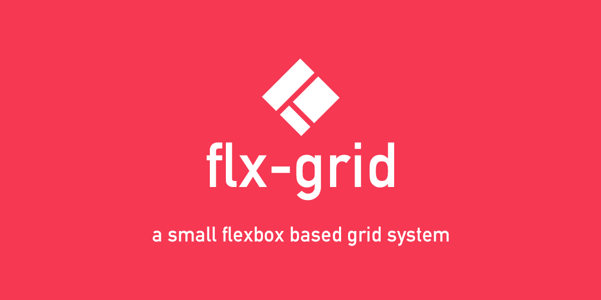
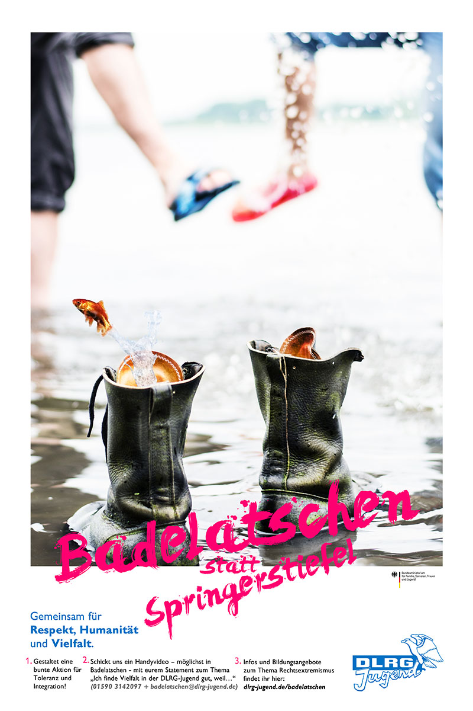
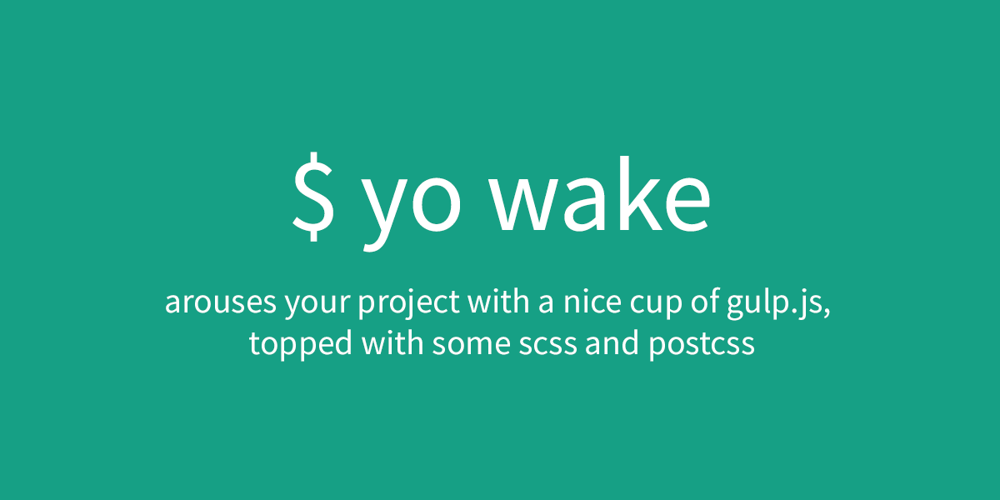
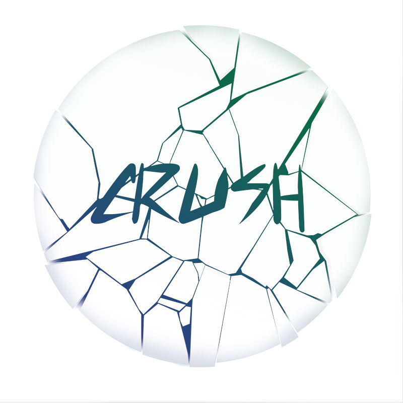
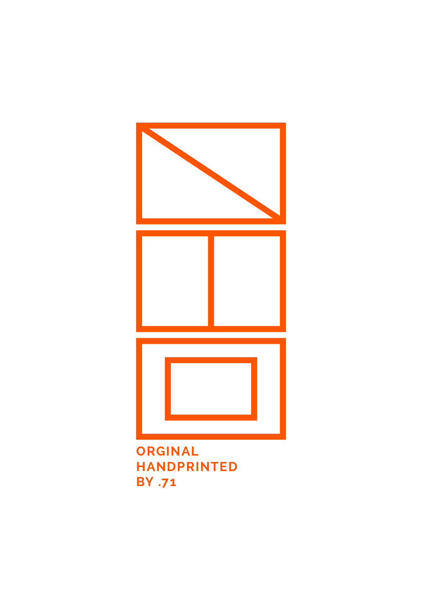
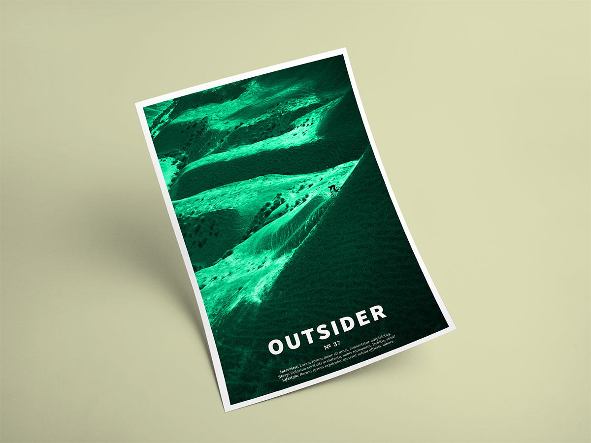

some free time projects

fun project to explore some sass syntax - read more at github

Nationwide multi media campaign for respect, humanity and diversity
Concept, Artdirection, Design, Producing (shortfilm in post production) and Photographie /w eight others - for DLRG Jugend
Concept, Artdirection, Design, Producing (shortfilm in post production) and Photographie /w eight others - for DLRG Jugend

my very own yeoman generator - read more at github

EP Cover
Design on my own - for crush
Design on my own - for crush

logo idea for a private fun artisan print project
Idea and Design on my own - for fun
Idea and Design on my own - for fun

magazin cover concept
Concept and Design on my own - school project
Concept and Design on my own - school project
T-Shirt Design Idea
Idea & Design on my own - for fun
Idea & Design on my own - for fun